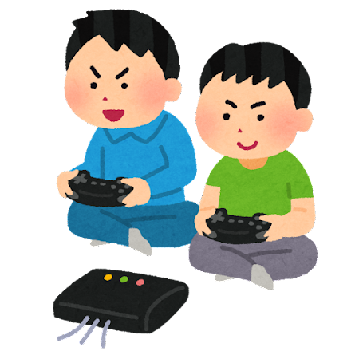

名前：比嘉奏陽（ひがそうや）
出身地：沖縄県沖縄市
学歴：サイテクカレッジ美浜IT総合学科卒
生年月日：2004年1月14日生まれ
那覇市で生まれ、小学校までは健やかに育った。
兄と父の影響でPCを触れ始める。思えばここからITへの道は始まったのかも
小5から沖縄市に引っ越しをした。祖父に進められて野球部に入るも1年で断念。
やめるための言い訳に中学受験を使って塾に入る。
中学受験はなぜか受かり、ここから球陽中学校に入る。高校も同じ
家で勉強することが嫌いで、中学後半まではなんとかついていけたものの、
勉強習慣を作らずに成長したため高校に入るころには下から数えたほうが早くなっていた。
コロナ禍直撃、家にずっといたため精神的に不安定な状況が続く。
奨学金を借りてまで大学に行きたくもなく、安価な専門学校に進む
専門学校に進んで、ある程度のITの知識を学ぶ。
特に具体的な夢は無かったので、需要が増えていきそうなITに進む。
なんといってもゲームが趣味。父と兄もゲームが好きだったのでそれに続く形でずっとゲームをしていた。
人生で一番やっているゲームはTerrariaというゲーム。総プレイ時間は4000時間を超えている。
モンスターハンターシリーズも大好き、シリーズ合計すると3500時間ほどはあると思う。
ある程度大きくなってから、ゲームを観るのも好きになった。いわゆるEスポーツというもの
アニメや漫画もわりと好き。好きなジャンルはラブコメとファンタジー
やっていたゲームの紹介はこちらで紹介しているため、興味がある方はぜひどうぞ